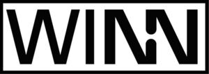

Trade Mark Journal No.2025/034 22 August 2025
WO0000001855476 (6,17)
Office of origin: European Union Intellectual Property Office (EUIPO)
Date of International Registration:12 November 2024
Date of designation in the UK:
12 November 2024

The mark contains the colour black.
International priority date claimed: 13 May 2024
(European Union Intellectual Property Office (EUIPO))
(019026179)
- Class 6
- Connectors and junctions of metal; connectors and junctions, of metal, for gas and liquid pipes, including for hose assemblies and pipelines; fittings, of metal, for gas and liquid pipes, including for hose assemblies and pipelines; quick screw fittings, hand-operated screw fittings, couplings and adapters of metal; pipes, of metal, for gases and liquids; branches of metal for hosing and pipelines; screw fittings of metal; screw fittings of metal for hosing and pipelines; nozzles of metal; valves of metal; valves of metal for pipelines and hosing; metal clips; clamps of metal for hosing and pipelines; screws of metal; metal hose clamps; couplings of metal for tubing; clips of metal for pipes; fittings of metal for pipes; junctions of metal for pipes; pipe extensions of metal; joint connectors (metal -) for pipes; rotating junctions of metal for pipes; pipe unions of metal; hose couplings made of metal; seals (packings) made of metal.
- Class 17
- Connectors and junctions, not of metal; connectors and junctions, not of metal, for gas and liquid pipes, including for hosing and pipelines; fittings, not of metal, for gas and liquid pipes, including for hose assemblies and pipelines; quick-release screw connections, manual screw connections, couplings, not of metal; hoses, not of metal, including plastic hoses; gaskets, including seals of rubber or plastic, sealing discs and sealing rings; valves of india-rubber or vulcanized fibre; couplings of rubber for tubes; connectors (non-metallic -) for hoses; non-metallic couplings for tubes; connectors (non-metallic-) for hoses; non-metallic coupling sleeves for tubes; elbow joints (non-metallic -) for flexible pipes; tubing connectors [non-metallic] for fuel lines; fittings for rigid pipes, not of metal; non-metallic couplings for tubes; non-metallic couplings for pipes; non-metal pipe couplings and joints; fittings, not of metal, for flexible pipes; couplings and joints, not of metal, for pipes; seals for pipe connections; pipe clamps of rubber; pipe unions (non-metallic -); junctions, not of metal, for pipes; pipe fittings [junctions] (non-metallic -); fittings, not of metal, for rigid pipes.
HENN Industrial Group GmbH & Co KG
Representative: ANWÄLTE BURGER UND PARTNER RECHTSANWALT GMBH, Rosenauerweg 16, A-4580 Windischgarsten, AUSTRIA